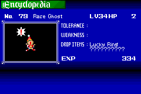
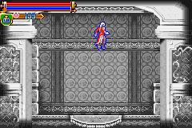

|
Rare
Rare Ghost

(ขอบคุณ คุณ canabis ที่เอื้อเฟื้อรูปภาพครับ)
Rare Ghost เป็นศัตรูที่ยากมากที่จะหาเจอได้
หากเล่นตามปรกติแทบจะไม่มีทางเจอมันได้เลย
เพราะเปอร์เซ็นต์ในการเจอมันน้อยมากๆ มีเพียง 1-2 เปอร์เซ็นต์
ซึ่งเปอร์เซ็นต์ในการเจอนั้นขึ้นอยู่กับค่า LUCK
แต่ถึงแม้จะมีค่า LUCK มากถึง 999 ก็มีเปอร์เซ็นต์เจอเพียง 25 เปอร์เซ็นต์เท่านั้น
อีกทั้งสถานที่ในการเจอ Rare Ghost เป็นแบบสุ่มอีกต่างหาก
ซึ่งสถานที่ที่สามารถเจอได้นั้นก็มีอยู่หลายแห่งมาก
(ให้ดู แผนที่
ประกอบ)
(* หมายเหตุ แผนที่อ้างอิงไปที่เว็บของ Gamefaqs.com)
สถานที่ที่มีเปอร์เซ็นต์เจอสูง คือ
- ในห้องใต้ห้อง Warp ภายใน Clockwork Tower ในปราสาท B
นอกจากนี้ยังมีอีกหลายๆ ห้องที่สามารถเจอ Rare Ghost ได้ เช่น
- ในปราสาท B ห้องที่เคยปราบ Peeping Big ให้ไปทางซ้าย แล้วขึ้นบน
ภายในห้องนั้น ถ้าโชคดีจะเจอ Rare Ghost ทางด้านขวาของห้อง
- ห้องด้านขวาของที่ Save ที่อยู่ด้านบนสุดของแผนที่ในปราสาท A
- ห้องด้านขวาสุดของ Room of Illusion ในปราสาท B ที่มี Victory Armors 3
ตัว
- ในส่วนเริ่มต้นสุดด้านนอกปราสาท บริเวณ Entrance ในปราสาท B
นอกจากที่กล่าวไปแล้ว ยังมีที่อื่นๆ อีก ที่สามารถเจอได้
Rare Ring
เป็นอุปกรณ์สวมใส่ประเภท GOODS
Rare Ring ไม่ใช่ Rare Item แต่เป็นส่วนสำคัญในการหา Rare Item
เนื่องจากเมื่อสวมใส่ Rare Ring จะทำให้มีเปอร์เซ็นต์ในการพบ Rare Item มากยิ่งขึ้น
หาได้จากสถานที่ : Skeleton Cave A
Noon Star
เป็น Item อยู่ในช่องเก็บ Item
เมื่อมีติดตัวจะสามารถเข้า Shop ในบางแห่งได้
หาได้จากศัตรู : Specter, Simon Wraith

Mystic Brooch
เป็นอุปกรณ์สวมใส่ประเภท GOODS
เพิ่ม Int +15
หาได้จากศัตรู : Rare Ghost
Floating Boots

เป็นอุปกรณ์สวมใส่ประเภท LEGS
หากใส่รองเท้านี้แล้ว เมื่อกระโดด จะลอยตัวอยู่กลางอากาศ
หาได้จากศัตรู : Pike Master

Infinite Boots
เป็่นอุปกรณ์สวมใส่ประเภท LEGS
หากใส่รองเท้านี้แล้ว จะสามารถ "กระโดด" ได้ไม่จำกัดครั้ง
หาได้จากร้านค้าภายใน Entrance ทั้งปราสาท A และ B
ราคา 12,000
|